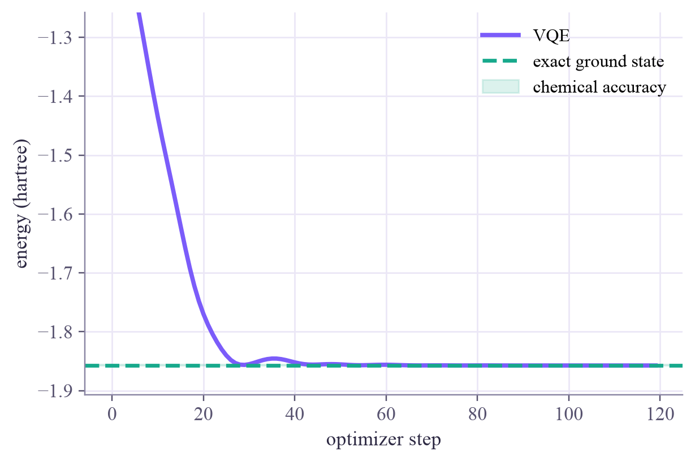

exact ground-state energy: -1.857275 hartree energy with all knobs at 0: -1.0637
Quantum Computing
 about 13 min
about 13 min qc-w7d4.ipynb
qc-w7d4.ipynb
Training a circuit: VQE
Everything this week, put to work: a circuit with knobs, an energy to minimize, parameter-shift gradients and PyTorch's Adam find the ground-state energy of a hydrogen molecule.
In this lesson you will
- Explain the variational principle: any trial state's energy is at least the ground-state energy
- Run VQE: a hybrid loop of quantum energy measurements and classical updates
- Wrap a circuit in PyTorch with a parameter-shift backward pass, and reach chemical accuracy
Warm-up
1 minTuning a radio

Turning an old radio's dial until the static disappears is an optimization: you listen, nudge the knob, listen again. Today a quantum circuit gets dials, an energy tells it how well it's doing, and PyTorch does the nudging. The target is a real molecule, H₂, and a number chemists care about: its ground-state energy.
Big idea
4 minDown to the lowest energy
A molecule's Hamiltonian is its energy observable. Its lowest eigenvalue, the ground-state energy , decides its shape and chemistry. For H₂, after some clever bookkeeping, fits on two qubits as five Pauli terms:
The variational principle says that every trial state, whatever its knobs, has energy at least :
So minimizing over the knobs can only approach from above. That's the variational quantum eigensolver (VQE), a hybrid loop:
- the quantum computer prepares and measures , term by term;
- it also measures the shifted circuits, giving the gradient by the parameter-shift rule;
- a classical optimizer (Adam) updates the knobs, and round we go.
To let PyTorch drive, wrap the circuit in a torch.autograd.Function: forward measures the energy, backward returns the parameter-shift gradient. Chemists aim for chemical accuracy: within 1.6 millihartree of the exact answer.
VQE: the quantum computer measures energies and slopes, a classical optimizer turns the knobs, and the variational principle guarantees you can only overshoot from above.
Play
4 minWalk down the landscape
A one-qubit version of the same loop, with (lowest energy ). The map shows the energy for every pair of angles ; click to choose a start and press Play. On the right, the Bloch arrow moves towards the yellow star, the lowest-energy state; the bottom panel shows the parameter-shift rule along .
Try this
Watch the bottom panel: the two orange dots sit a quarter-turn on either side of the current angle, and half the difference of their heights is the slope of the pink tangent. Then start at the very top of a bright hill, where the slope is almost zero: the walker barely moves at first. Friday's lesson is about landscapes that are flat almost everywhere.
Code
2 minVQE for H₂ with PyTorch
The notebook for this lessonEvery code cell below, with what it printed, is in
qc-w7d4.ipynb. To change the code and run it yourself, open the notebook in Google Colab (free, in your browser) or download it for your own Jupyter.import numpy as np
import torch
import matplotlib.pyplot as plt
from qiskit import QuantumCircuit
from qiskit.circuit import ParameterVector
from qiskit.quantum_info import SparsePauliOp
from qiskit.primitives import StatevectorEstimator
torch.set_num_threads(1)
# H2 at a bond length of 0.735 angstrom, mapped to two qubits (the example in Qiskit's VQE documentation);
# energies in hartree, without the repulsion between the two nuclei
H = SparsePauliOp.from_list([("II", -1.052373245772859), ("IZ", 0.39793742484318045), ("ZI", -0.39793742484318045),
("ZZ", -0.01128010425623538), ("XX", 0.18093119978423156)])
exact = np.linalg.eigvalsh(H.to_matrix()).min()
print(f"exact ground-state energy: {exact:.6f} hartree")
def make_ansatz(with_cnot=True):
knobs = ParameterVector("θ", 4)
qc = QuantumCircuit(2)
qc.ry(knobs[0], 0)
qc.ry(knobs[1], 1)
if with_cnot:
qc.cx(0, 1)
qc.ry(knobs[2], 0)
qc.ry(knobs[3], 1)
return qc
ansatz = make_ansatz()
estimator = StatevectorEstimator()
def energies(circuit, parameter_sets):
"""One Estimator call for many knob settings at once."""
return estimator.run([(circuit, H, np.atleast_2d(parameter_sets))]).result()[0].data.evs
print("energy with all knobs at 0:", round(float(energies(ansatz, [0, 0, 0, 0])[0]), 4))What it printed in the notebook
class Energy(torch.autograd.Function):
@staticmethod
def forward(ctx, knobs, circuit):
ctx.save_for_backward(knobs)
ctx.circuit = circuit
return torch.tensor(float(energies(circuit, knobs.detach().numpy())[0]), dtype=knobs.dtype)
@staticmethod
def backward(ctx, grad_output):
(knobs,) = ctx.saved_tensors
k = knobs.detach().numpy()
shifts = np.pi / 2 * np.eye(len(k))
e = energies(ctx.circuit, np.vstack([k + shifts, k - shifts])) # 2P circuits
grad = (e[: len(k)] - e[len(k):]) / 2 # the parameter-shift rule
return grad_output * torch.tensor(grad, dtype=knobs.dtype), None
def vqe(circuit, steps=120, lr=0.1, seed=0):
torch.manual_seed(seed)
knobs = (0.1 * torch.randn(circuit.num_parameters, dtype=torch.float64)).requires_grad_()
optimizer = torch.optim.Adam([knobs], lr=lr)
history = []
for _ in range(steps):
optimizer.zero_grad()
loss = Energy.apply(knobs, circuit)
loss.backward()
optimizer.step()
history.append(loss.item())
return knobs.detach().numpy(), history
knobs, history = vqe(ansatz)
print(f"VQE energy {history[-1]:.6f}, exact {exact:.6f}, error {abs(history[-1] - exact) * 1000:.3f} millihartree")What it printed in the notebook
VQE energy -1.857273, exact -1.857275, error 0.002 millihartree
plt.plot(history, color="#7b5cfa", lw=2.5, label="VQE")
plt.axhline(exact, color="#17a98c", ls="--", label="exact ground state")
plt.axhspan(exact, exact + 0.0016, color="#17a98c", alpha=0.15, label="chemical accuracy")
plt.xlabel("optimizer step")
plt.ylabel("energy (hartree)")
plt.ylim(exact - 0.05, exact + 0.6)
plt.legend()
plt.show()What it printed in the notebook

Your turn
2 minYour turn: what does the CNOT buy?
Train the same ansatz without its CNOT, so it can only make product states. How far above the exact energy does it get stuck?
no_cnot = make_ansatz(with_cnot=False)
# TODO: run vqe(no_cnot) and print its final energy and its error in millihartreeNeed a hint?
_, history_product = vqe(make_ansatz(with_cnot=False)), then compare history_product[-1] with exact. Multiply the difference by 1,000 for millihartree.
Show a solution
no_cnot = make_ansatz(with_cnot=False)
_, history_product = vqe(no_cnot)
print(f"without the CNOT: {history_product[-1]:.6f}, error {abs(history_product[-1] - exact) * 1000:.1f} millihartree")
print(f"with the CNOT: {history[-1]:.6f}, error {abs(history[-1] - exact) * 1000:.3f} millihartree")
print("The best product state misses about 20 millihartree: the 'correlation energy' of H2, which only an")
print("entangled state can capture. Without entanglement, no chemical accuracy.")What it printed in the notebook
without the CNOT: -1.836964, error 20.3 millihartree with the CNOT: -1.857273, error 0.002 millihartree The best product state misses about 20 millihartree: the 'correlation energy' of H2, which only an entangled state can capture. Without entanglement, no chemical accuracy.
Check yourself
1 minQuick check
Question 1 of 3
VQE reports an energy of −1.80 for a molecule. What does the variational principle tell you?
Question 2 of 3
In VQE, who does what?
Question 3 of 3
Without its CNOT, the ansatz stops about 20 millihartree above the exact energy. Why?
Wrap-up
1 minToday in one sentence
Quantum link
Swap the energy for a classification loss over a dataset, feed the data in through rotation angles, and this exact loop becomes a variational quantum classifier, the heart of the Quantum ML tutorial's week 3.
Go deeper (optional)
The original VQE paper: Peruzzo and coauthors, "A variational eigenvalue solver on a photonic quantum processor" (Nature Communications, 2014). Kandala and coauthors, "Hardware-efficient variational quantum eigensolver for small molecules and quantum magnets" (Nature, 2017), ran it on superconducting qubits with the kind of ansatz you used today.
Next in Quantum Computing: the week 7 finale, barren plateaus, and the road to quantum machine learning.

That's the lesson!
Tap the button to save it. Short and steady wins.
Marked by mistake? Undo